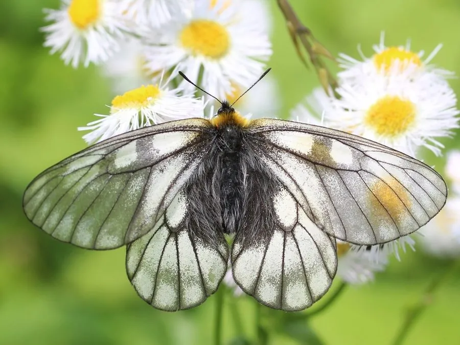

昆虫 · 动物界
冰清绢蝶 Parnassius glacialis

翅面乳白而半透明、翅脉清晰如薄冰的绢蝶，栖息于中高海拔山地，幼虫以紫堇属植物为食，一年发生一代。
- 分类
- 门节肢动物门纲昆虫纲目鳞翅目科凤蝶科属绢蝶属
- 栖息环境
- 海拔数百米至两千米的山地林缘、灌丛、草坡与溪谷边
- 地理分布
- 中国华北、东北至华中山地，以及朝鲜半岛和俄罗斯远东
- 保护级别
- 尚无专门保护级别；山地开发与生境破碎化是主要威胁
物种志
冰清绢蝶的翅展约五至六厘米，翅面乳白色而略带透明，翅脉清晰可辨，前翅外缘有淡灰色宽带，后翅常缀有淡红色小斑，翅质薄软，像一层凝在空中的薄冰，冰清绢蝶之名由此而来。它的身体密被灰白色绒毛，触角短而呈棒状，雌蝶体型略大于雄蝶，腹部也更饱满，卵呈乳白色圆粒，产在寄主附近的枯枝或石缝里。
它分布于中国华北、东北至华中山地，以及朝鲜半岛和俄罗斯远东，栖息在海拔数百米至两千米的山地林缘、灌丛与草坡，常在溪谷边访花吸蜜，也爱停在碎石上晒太阳。幼虫以紫堇属植物为食，以卵越冬，翌年春季孵化，幼虫期约一个月，化蛹于落叶层下，一年发生一代。成虫飞行缓慢而飘忽，目前尚无专门保护级别，山地开发与生境破碎化是主要威胁。
形态与习性
- 翅展约五至六厘米，翅面乳白半透明
- 翅脉清晰可辨，前翅外缘有淡灰色宽带
- 食性幼虫取食紫堇属植物叶片
- 越冬以卵越冬，翌年春季孵化
- 发生世代一年一代，成虫春末夏初出现
- 栖息环境山地林缘、灌丛与草坡，溪谷边访花
趣味知识
- 它的翅薄得近乎透明，翅脉像冰面上的裂纹，冰清绢蝶的名字正由此而来。
- 雌蝶把卵产在寄主附近的枯枝或石缝里，卵要熬过整个冬天才孵化。
- 成虫飞得缓慢飘忽，遇到危险时主要靠翅上的斑纹和腹部的绒毛伪装。